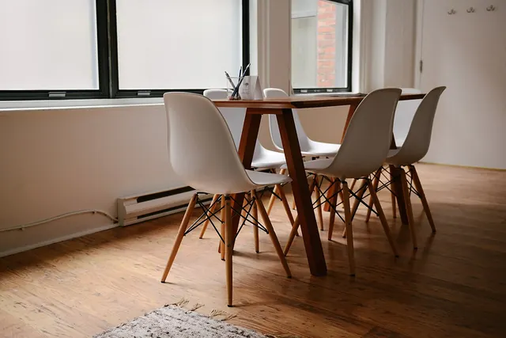
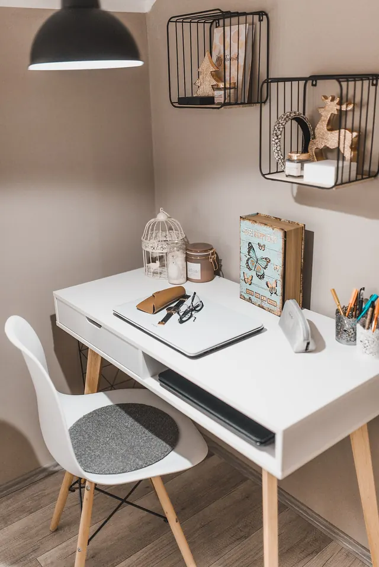

事務所の概要
- 名称
- 真柴税理士事務所
- 代表
- 真柴 遼（税理士）
- 登録番号
- 第000000号
- 所属
- 朝凪税理士会
- 所在地
- 〒000-0000 朝凪市中央1丁目0-0 朝凪中央ビル 3階
- 受付時間
- 平日 9:00〜18:00（相談は土曜も可、要予約）
- 対応地域
- 全国（オンライン）。来所は朝凪市と周辺
- 適格請求書発行事業者
- T0000000000000
- 使える会計ソフト
- freee、マネーフォワード クラウド、弥生会計


代表の経歴
- 会計事務所に入所。個人事業主の確定申告を担当
- 税理士登録
- 税理士法人で中小企業の顧問を担当
- 朝凪市で独立し、真柴税理士事務所を開業
個人事業主とフリーランスの申告、開業1〜3年目の会社の顧問を中心にしています。相続と大きな会社の監査は扱っていないため、必要なときは信頼できる事務所をご紹介します。
道順
朝凪駅 西口から徒歩5分
- 朝凪駅の西口を出て、正面の中央通りを右へ。
- 2つ目の交差点、銀行の角を左へ。
- 左手3軒目、1階が花屋のビルの3階です。エレベーターがあります。